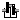
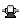
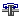

Icons for Rotational package
This package contains icons for the Rotational library (that is, all the components have only graphical annotations without any equations).
Extends from Modelica.Icons.IconsPackage (Icon for packages containing icons).
| Name | Description |
|---|---|
|  Gear | Rotational gear icon |
|  Gearbox | Icon of gear box |
|  Clutch | Icon of a clutch |
Rotational gear icon
This is the icon of a gear from the rotational package.
Icon of gear box
This is the icon of a gear box from the rotational package.
Icon of a clutch
This is the icon of a clutch from the rotational package.
Automatically generated Fri Oct 02 11:08:16 2015.